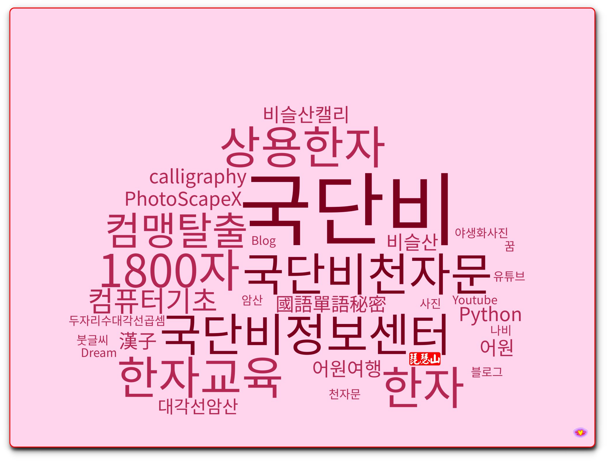

어원여행
우리가 사용하는 말들의 어원을 찾아봤습니다. 예를들면 "병신육갑하네"라는 말이 생기게 된 원인이라든지, 칠푼이 팔푼이의 어원등을 통해서 그 말이 만들어질 당시의 상황을 파악해볼수도 있습니다. 우리말 뿐아니라 서양에서 만들어진 말도 어원을 찾아보는것은 역사를 이해하는데 많은 도움과 공부가 됩니다.
한자는 중국글자가 아닌 동아시아 공통의 글자로 인식을 해야 한다는데서 출발합니다.
우리가 쓰는 말의 어원을 찾는 것도 오랜 시기 한자와 같이 녹아 있던 생활을 되짚어 보는 것입니다.
부수적으로 곱셈법, 컴퓨터, 캘리그라피, 야생화사진등 개인의 취미가 가미된 형태이 개인 포트폴리오 입니다.
국단비의 목표는
질좋은 교육용 콘텐츠를 누구나 접할수 있게 만드는 것입니다.
우리가 사용하는 말들의 어원을 찾아봤습니다. 예를들면 "병신육갑하네"라는 말이 생기게 된 원인이라든지, 칠푼이 팔푼이의 어원등을 통해서 그 말이 만들어질 당시의 상황을 파악해볼수도 있습니다. 우리말 뿐아니라 서양에서 만들어진 말도 어원을 찾아보는것은 역사를 이해하는데 많은 도움과 공부가 됩니다.
세상은 넓습니다. 발길 닿은곳의 족적을 남기는 일은 흥미롭습니다. 내가 갔던곳에 대한 역사적 자료를 찾아 보는것도 흥미롭습니다. 카메라가 항상 손에 쥐여 있으니까, 그날에 갔던곳의 개인적인 상황도 기록해둘수가 있어 좋습니다.
1997년 jorn barger 이라는 사람이 자신의 웹사이트에 자신의 생각과 경험을 기록하면서 (weblog)라고 한데서 유래한것이 blog라고 합니다. 이 블로그에도 저 자신의 생각과 경험을 공유하는 공간이 되고 있습니다.

python으로 만든 WordCloud 입니다....감사합니다.
